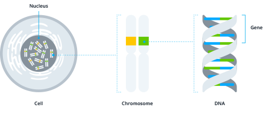

Genetics is a complex subject, but it doesn’t have to be difficult to understand. Here’s a quick primer to get you started with the basics.
DNA, or deoxyribonucleic acid, is present in nearly all living organisms, and houses genetic information. It is often visually depicted as a twisted, ladder-like double helix. Most of the cells in your body contain DNA within their nucleus.
Your DNA is organized into pieces called chromosomes. You have 23 pairs of chromosomes – inheriting one set of chromosomes from your mother, and one set of chromosomes from your father.
Chromosomes contain all of your different genes. As an analogy, you can think of your DNA like the library, and chromosomes like the shelves that make up the structure of the library.
Genes are stored along the chromosomes in different positions, like books along the library shelves. Those “books” – aka genes – contain instructions that tell your body what to do to in order to make you... you! From your hair color, skin and height, to things like athletic performance, sleep patterns and weight, your genes play a role.